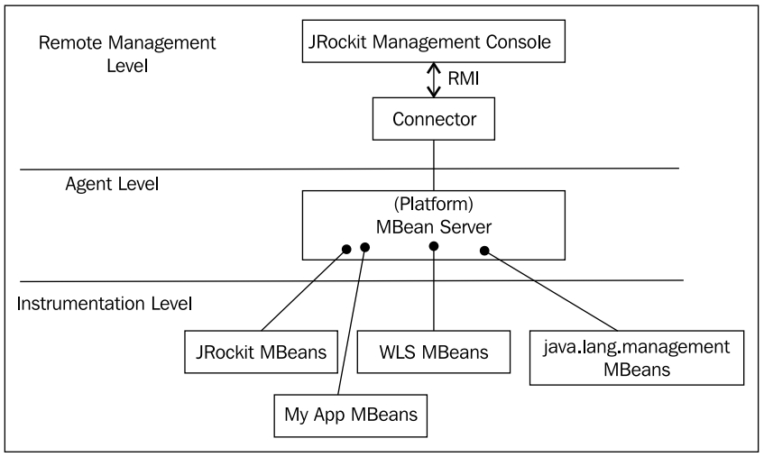
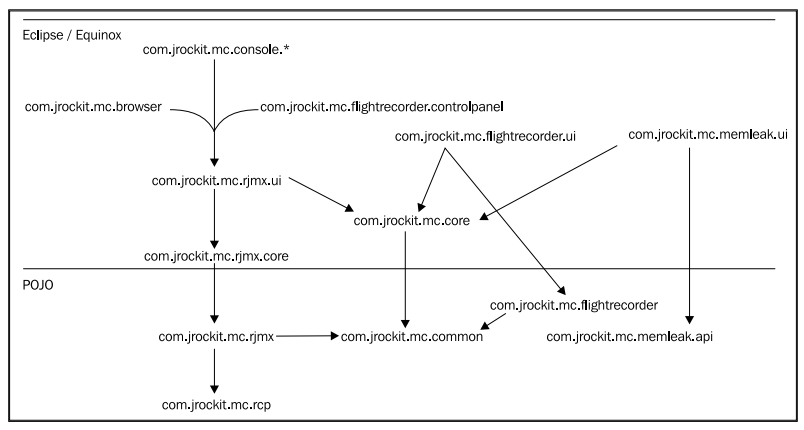
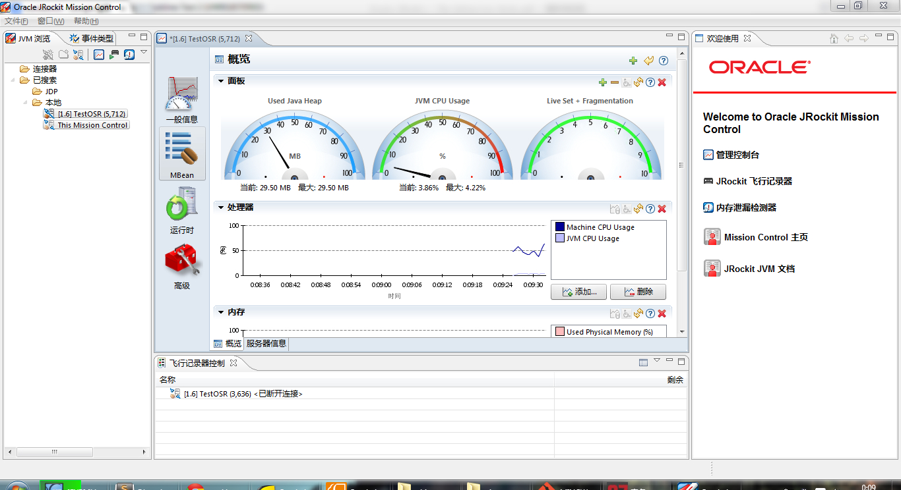
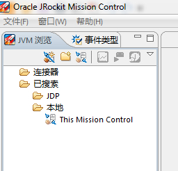
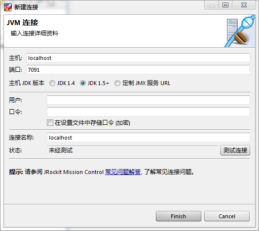
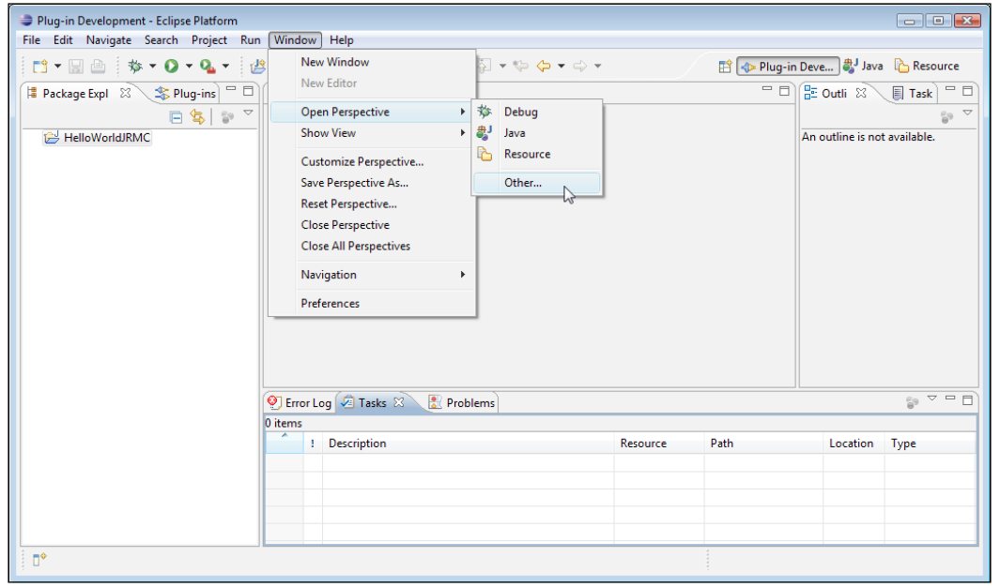

6.2 概述
JRockit Mission Control的4.0版本中包含以下组件：
- JRockit Management Control: 通常作为监控JVM和应用程序的控制台使用。Management Control支持自定义图形，触发规则（用户可以自定义触发条件）等特性。
- JRockit Flight Recorder: 常称为Flight Recorder或JFR，可以以很低的执行开销记录下JRockit JVM的运行状态，并通过JRockit Mission Control GUI导出记录数据以便做离线分析。JRockit Flight Recorder取代老版本的JRockit Runtime Analyzer（在R27.x和3.x之前的版本），称为整个套件最主要的分析工具。
- JRockit Memory Leak Detector: 或简称为Memleak，是一款功能强大的离线堆分析器，以可视化的形式展现了内存的使用趋势，以及堆中不同类的实例之前的关联关系等信息。通过对系统中每种类型的存活对象的运行趋势进行分析，即使是很小的内存泄漏问题，Memleak也可以迅速检测出。
JRockit Mission Control包含两个主要模块，一套API、代理集合，与一套内建于JRockit JVM和JRockit Mission Control客户端中的协议。不同的工具使用不同的API，但都通过JMV与JRockit JVM进行通信。
这里对JMX的基本概念做简单介绍，有关的详细内容超出本书的范畴，此处不再赘述。JMX包含以下层级：
- 设备层（instrumentation level）: 应用程序在这一层暴露出需要通过MBean（managed bean）进行管理的资源。MBean是JavaBean的一种特例，包含了属性、操作和通知机制。
- 代理层（agent level）: 代理用于是管理MBean的组件，最重要的代理层组件是MBean容器，即MBean服务器，用于对MBean进行注册和管理。
- 远程管理层（remote management level）:该层级提供了可用于MBean服务器和远端JVM进行通信的协议适配器。
下图是部署JRockit时，不同JMX层级的应用示意图：

6.2.1 JRockit Mission Control的服务器端组件
从JRockit Mission Control的角度看，受监控的JRockit JVM主要包含以下几个部分：
一套服务器端API：
- JMXMAPI，JRockit JVM对MBean服务器中的MBean实现的扩展。有关MBean和MBean服务器的内容留到第7章进行介绍
- JRockit内部实现的一套Java API，例如JRockit Management API（JMAPI） * 服务器端的本地API，一套内建于JRockit JVM中的非标准Java API，例如Memleak使用的本地API
由上述API和其他服务暴露出的代理：
- 默认的JMX代理
- Memleak服务器，一个本地服务器，通过MemLeak Protocol协议对外暴露出Memleak API接口
- JDP服务器（JRockit Discovery Protocol），一个可选服务，用于在网络中广播JVM实例的位置
6.2.2 JRockit Mission Control的客户端组件
作为JRockit Mission Control的2.0版本，JRMC基于Eclipse RCP（Rich Client Platform）技术开发，本身有很多特点，例如基于OSGi的组件模型，可以作为独立的应用程序或嵌入到Eclipse中运行JRockit Mission Control。
Mission Control 2.0内部代号是"Energy"，意为，"E=mc^2"，哈哈！
RCP（Rich CLient Platform）是Eclipse的基础平台，，它包扩SWT（Standard Widget Toolkit）、JFace、Equinox（OSGi的Eclipse实现）和一套交付/更新RCP应用程序的内建机制。OSGi是一套有很多大公司支持的、标准化的动态模块系统，而RCP使用户可以像编写本地应用程序一样编写/交付高度模块化的OSGi应用程序。
更多有关RCP和内容，请参见http://www.eclipse.org/home/categories/rcp.php，有关OSGi的内容，请参见这里http://www.osgi.org/
JRockit Mission Control的客户端程序具有高度的模块化结构，可以非常容易的嵌入新的插件工具，或进行扩展开发。
从JRockit Mission Control的角度看，客户端包含以下几个部分：
- RCP，Eclipse Rich Client Platform
客户端API:
- RJMX，扩展的JMX服务，例如MBean属性的订阅框架、触发器、代理和旧版RMP协议（在JRockit 1.4版本中使用）
- Memleak API，一套与Memleak服务器进行通信的API
- Flight Recorder模型，用于解析JRockit Flight Recorder记录的内容
- JDP Client API，用于检测网络中正在运行的JRockit实例
JRockit Mission Control核心，包含了JRockit Mission Control客户端的核心框架，定义了核心扩展点
- JVM浏览器，持续跟踪监测到的JVM实例
- 可以从JVM浏览器中启动的各种工具，例如Management Console，Flight Recorder和Memleak
下图展示了JRockit Mission Control 4.0.0版本中各部分的结构：

本章后面的内容会主要介绍在使用JRockit Mission Control时可能会遇到的问题，有关其内部组件的内容会在后续章节中介绍。
6.2.3 术语介绍
为了更好的对JRockit Mission Control进行介绍，这里需要先对一些相关名词的概念进行解释，名词的上下文适用于单独使用JRockit Mission Control，或嵌入Eclipse中使用的场景。
在这里，Eclipse和Eclipse工作台（Eclipse Workbench）是同一个东西。
在Eclipse RCP应用程序中，称主窗口为"工作台"，在工作台中有两类窗口，分别是视图（view）和编辑器（editor）。编辑器窗口占据了工作台的主要部分，试图窗口一般就在编辑器窗口附近。
如下图所示，JVM浏览器视图就位于整个窗口的左侧：

视图常用来展示已选择的某个编辑器的专有内容，可以在其中对编辑器的内容进行操作，或载入新的编辑器。拖动视图，可以将多个视图窗口停靠在一起。
在Eclipse中，显示哪些视图，视图的位置的配置信息统称为透视图（perspective）（译者注，透视图一词取自wiki中的翻译）。在上面的截图，使用的是Mission Control透视图，在其中包含有JVM浏览器视图和事件类型视图。如果不小心关闭了某个视图，或对调整后的视图位置不太满意的话，可以通过菜单"窗口"->"Reset Perspective"来重置当前透视图下的视图窗口。
在上面的截图中，当前打开的编辑器是JRockit Mission Control Console，用于监控一个正在本地运行的应用程序，其主类是LoadAndDeadlock。
从Eclipse的角度说，JRockit的各种工具就是编辑器，使用的时候都会在编辑器区域打开视图，有时会同时打开多个编辑器，以多标签的形式停靠在编辑器区域，或者拖动各编辑器使其按用户的意愿排列。视图（例如JVM浏览器）则不能停靠在编辑器区域中，而只能位于编辑器区域的周围。
在Management Console的左侧，是一个标签组工具条可以选择要在标签页容器中显示哪些内容，其他JRockit Mission Control工具中同样存在对应标签组工具条可供选择。在JRockit Mission Control 3.1版本中，打开ManagementConsole工具会默认选择"一般信息"标签组，只不过在其中只有"概览"一个标签页。
6.2.4 单独运行JRockit Mission Control
JRockit Mission Control既可以单独运行，也可以作为插件运行在Eclipse IDE中，随JRockit JDK一起发行的JRockit Mission Control是用于单独运行的。
单独运行JRockit Mission Control非常简单，在JRockit发行本的bin目录下直接运行命令jrmc（在Windows系统中是jrmc.exe）即可。
单独运行JRockit Mission Control的话，执行
jrmc命令就好了，不要出奇招。有时，客户会自行设置类路径，直接从jar中启动JRockit Mission Control。不过，这个办法并不好，建议不要这样做，因为jrmc的启动器会对JRockit Mission Control的版本和设置的类路径进行校验，设置不当的话，会无法启动JRockit Mission Control。
启动JRockit Mission Control的命令如下所示：
JROCKIT_HOME/bin/jrmc在Windows系统中，安装了JRockit Mission Control之后，也可以从开始菜单中启动。
启动JRockit Mission Control之后，会显示一个空的工作空间（参见JRockit Mission Control 3.x版本）或是欢迎界面（参见JRockit Mission Control 4.0版本）。如果安装成却的话，JRockit Mission Control会自动检测到正在本机中运行的JVM，即使当前没有其他Java应用程序正在运行，在JRockit Mission Control的JVM浏览器视图中也会列出运行当前JRockit Mission Control的JRockit JVM。
在JVM浏览器视图中，可以针对已选定的JVM启动多种JRockit Mission Control工具。
由于大多数工具都依赖于JRockit JVM独有的API，因此它们都只适用于JRockit JVM，目前只有Management Console不受此限制，它可以通过JMX技术与其他JVM进行通信，但如果连接的不是JRockit JVM的话，就无法使用某些功能了。

查找并监控本地JVM是非常简单的，无需额外配置，但是把JRockit Mission Control客户端和应用程序放在同一个服务器上运行就不太妙了，JRockit Mission Control客户端不得不和应用程序争抢操作系统资源。当然，在开发和测试环境中，这么干没问题。此外，设置是基于每个连接设置的，例如在JRockit Management Console的图形展示中添加一个属性，而这些设置并不会存储在本地连接中。
添加一个用户自定义的连接非常简单，右键点击"连接器"，选择"新建连接"：

正如上面的截图所示，在其中填写相应的连接信息，通常情况下，只填写主机地址和接口即可。其他相关信息如下：
- 若目标JVM运行在JRockit JDK 1.4版本上，选中"JDK 1.4"单选框
- 选择"定制JMX服务URL"单选框后可以自行输入完整JMX服务URL。JMX服务URL指定了如何连接到JMX代理，当需要通过其他协议（默认使用基于RMI的JMX协议）连接到JMX代理时，自定义JMX服务URL是很有用的
- 勾选"在设置文件中存储口令（加密）"就可以将连接密码保存下来。如果启用了密码保存功能，则会使用主密码进行加解密操作。点击"窗口"->"Preferences"，点击"重置主密码"按钮可以重新设置主密码。
- 在关闭"新建连接"按钮之前，点击"测试连接"按钮，可以对之前配置的JMX连接信息进行测试。
6.2.5 在Eclipse中运行JRockit Mission Control
JRockit Mission Control也可以运行在Eclipse中，不仅不会有功能损失，而且还有很多好处。如果应用程序的代码正好是使用Eclipse开发的，就可以通过JRockit Mission Control客户端直接跳转到指定的类或方法中。
如果读者对Eclipse不太熟，或者不打算使用Java进行开发，那么就可以直接跳过本节内容了。
要想在Eclipse中运行JRockit Mission Control，就需要先安装相应的插件。最新版的插件可以在Oracle Technology Network的主页上找到.在编写本书时，JRockit Mission Control的主页在http://www.oracle.com/technology/products/jrockit/missioncontrol/index.html。
为了便于记忆，也可以在http://www.tinyurl.com/missioncontrol访问到JRockit Misison Control的主页。
插件的主页上有安装方法说明，这里不再赘述。为了能够充分发挥JRockit Mission Control插件的特点，最好能够以JRockit JVM来运行Eclipse。虽说不是用JRockit JVM也能使用大部分功能，但是就无法再运用某些特性（例如自动发现本地JVM）和Management Console中的一些JRockit专有功能了。
在Eclipse中运行JRockit还有一些其他好处，综合运用JRockit Real Time和Adaptive Memory Management工具可以更好的解决交互式应用程序中的响应延迟问题。
Eclipse的配置文件eclipse.ini位于其安装目录下，可以通过修改其命令行参数来启用JRockit JVM。本书作者所使用的配置文件如下所示：
-showsplash
org.eclipse.platform
-framework
plugins\org.eclipse.osgi_3.4.3.R34x_v20081215-1030.jar
-vm
d:\jrockits\R27.6.3_R27.6.3-16_1.5.0\bin
-vmargs
-Xms512m
-Xmx512m
-XgcPrio:deterministic
-XpauseTarget:20上面的配置文件适用于Eclipse 3.4和JRockit R27，如果要使用R28版本，只需要在-vm参数后指定JRockit R28 JVM的路径即可，-vmargs后的参数无需修改。
从R27版本到R28版本，有很多命令行参数发生了变化，在使用这些参数之前，请先查阅相关文档。
安装了JRockit Mission Control插件后，就可以在Mission Control透视图中启动JRockit Mission Control了。在Eclipse 3.x版本中，有两个透视图可用，分别是Mission Control的主透视图和Mission Control Latency透视图，后者用于分析JRA（JRockit Runtime Analyzer）记录的延迟数据。到Eclipse 4.0版本时，所有的工具就都已经集成到一个透视图中了。
正如下面的截图所示，可以在"Window"->"Open Perspective"->"Other..."中找到Mission Control透视图；

打开Mission Control透视图后，其界面内容与单独运行JRockit Mission Control类似。正如前面提到的，在Eclipse中运行JRockit Mission Control更便于与应用程序的源代码联调，如下所示：

译者注，那个插件始终安装不成功，没法截个清晰的图，求原谅。
6.2.6 远程管理JRockit
若要启用JRockit JVM的远程管理功能能，就需要在启动JVM时，附加外部管理扩展，可以通过命令行参数–Xmanagement或JRCMD完成。有关JRCMD的内容会在第11章详细介绍。
下面的代码展示了如何通过命令行参数来启用远程管理功能，其中，配置的远程管理端口是4712，并关闭了对安全认证和SSL的支持：
JROCKIT_HOME/bin/java –Xmanagement:ssl=false,authenticate=false,port=4712 –cp . HelloJRMC现在，暂时先忽略与安全相关的参数，着重谈谈端口。在[6.2.7节]中会对安全方面的内容作介绍。
之前曾经提到过，默认的管理扩展通过基于RMI协议的JMX来完成。由于RMI通常使用匿名端口进行通信，所以当通信双方之间存在防火墙时，就会带来些麻烦。针对RMI的详细内容超出了本书范围，不再赘述，这里谈一谈在R28版本之前是如何解决这个问题的：
- 使用命令行参数
–Xmanagement:port=<port>会在指定端口（默认为7091）上打开一个只读的Registry 接口 - 打开的RMI Registry接口只包含一项，
jmxrmi，用于与RMI服务器进行通信的存根（stub） - RMI服务器使用一个不会被覆盖掉的匿名端口进行通信
到了R28版本，事情方便了许多。默认情况下，RMI注册和RMI服务器端口是相同的，使得防火墙的配置更加简单。
6.2.6.1 JRockit发现协议（JRockit Discovery Protocol）
JRockit JVM中自带了一个网络自动发现的特性，称为JRockit自动发现协议（JRockit Discovery Protocol， JDP），JDP服务器会向网络中广播JRockit实例的存在，这个特性是JRockit Mission Control可以自动发现远程JRockit JVM的存在。下面的命令在启动JRockit JVM时就启用了JDP协议：
JROCKIT_HOME/bin/java –Xmanagement:ssl=false,authenticate=false,port=4712,autodiscovery=true –cp . HelloJRMC下表中列出了在JRockit R28版本中可用于空JDP服务器的系统属性，通过命令行启动JRockit JVM时，使用参数-D来指定相关属性即可。例如：–Dcom.oracle.managementautodiscovery.period=2500
System Property Explaination
com.oracle.management.autodiscovery.period 两次广播之间的时间间隔，以毫秒为单位，默认是5000
com.oracle.management.autodiscovery.ttl 广播所需的TTL数，默认为1
com.oracle.management.autodiscovery.address 自动发现所使用的多播地址，默认为232.192.1.212
com.oracle.management.autodiscovery.targetport 自动发现所使用的多播端口，默认为7095
com.oracle.management.autodiscovery.name 分级名称，参见下面的示例内容在R28版本之前，若要使用上表中的属性，需要将命名空间
com.oracle.management.autodiscovery替换为jrockit.managementserver.discovery。
当JDP服务器向网络中广播了JRockit JVM的位置后，在JRockit Mission Control客户端的JVM浏览器视图中，有以下3中方法使用分级名称：
- 简单名称，例如，
-Djrockit.managementserver.discovery.name=MyJVM，则在JVM浏览器视图中出现的连接名称为MyJVM - 完整路径，例如，
-Djrockit.managementserver.discovery.name=/MyJVMs/MyJVM，则在JVM浏览器视图中会有一个名为MyJVMs的文件夹，其中有一个名为MyJVM的虚拟机连接 - 以分隔符结尾的路径，例如，
-Djrockit.managementserver.discovery.name=/MyJVMs/，则在JVM浏览器视图中会有一个名为MyJVMs的文件夹，在其中会通过反向DNS查找列出JDP包所指明的主机。
关于插件开发的提示
JDP服务器会自动选取以
com.oracle.management.autodiscovery.property开头的系统属性，并将其发送给客户端。从R28.0.0开始，客户端无需再使用这些属性，而是将之放在JRockit Mission Control客户端的IConnectionDescriptor接口中供开发者使用。
下表是R28版本中可用于命令行参数–Xmanagement中的属性：
Flag Explanation Default
port = <int> RMI Registry所使用的端口 7091
ssl = [true|false] 启用SSL。注意，这只是启用了服务器端的SSL，如果想在客户端也启用SSL，则需要 true
设置属性com.sun.management.jmxremote.ssl.need.client.auth=true。此外，默
认情况下，RMI Registry并不会启用SSL，需要手动启用，参见registry.ssl属性的
说明。
registry.ssl = [true|false] 将RMI连接器绑定到启用了SSL的RMI Registry false
authenticate = [true|false] 使用JMX时，是否启用密码验证。如果关闭，则任何人都可访问所有资源。 true
autodiscovery = [true|false] 为远程JMX连接器启用自动发现服务。启用自动发现服务可以让同一子网其他机器自 true
动发现启用了远程管理的JVM。注意，只有当启用了远程JMX管理后，自动发现服务才
会生效
local = [true|false] 是否启用本地管理扩展 true
rmiserver.port = <int> 设置RMI服务器的端口，默认情况下与RMI Registry相同。但如果RMI服务器启用了 与RMI服务器端口系统
remote = [true|false] 是否启用远程管理扩展 false
config.file = <path> 指定配置文件的地址 JRE_HOME/lib/management/management.propertiesJRockit R28版本中还包含了一些可用于控制具体配置的系统属性，例如所示：
Property Explanation Default
com.oracle.management 通过JMX连接器启用JMX本机监控。该连接器发布在一个私有接口上，JMX客户端可通 true
.jmxremote= [true|false] 过Attach API来使用该接口（参见[官方文档][19]的说明）。若该客户端和JMX代理
是由同一用户启动的，则客户端可以直接使用其提供的连接器，而无需进行安全校
验。如果将该属性值置为false，则即使指定了jmxremote.port的值，也不会启动本
地连接器。
com.oracle.management 与-Xmanagement:port=<int>配置相同 7091
.jmxremote.port = <int>
com.oracle.management 与-Xmanagement:rmiserver.port=<int>配置相同 7091
.jmxremote.rmiserver.port
= <int>
com.oracle.management 与-Xmanagement:ssl=[true|false]配置相同 true
.jmxremote.ssl
= [true|false]
com.oracle.management 与-Xmanagement:registry.ssl = [true|false]配置相同 false
.jmxremote.registry.ssl
= [true|false]
com.oracle.management 所要使用的SSL/TSL协议的版本列表，以逗号分隔 默认的SSL/TSL协议版本
.jmxremote.ssl.enabled
.protocols = <values>
com.sun.management.jmxremote 所要使用的SSL/TSL协议的密码组，以逗号分隔 默认的SSL/TSL密码组
.ssl.enabled.cipher.suites =
<values>
com.oracle.management. 配置是否启用SSL false
jmxremote.ssl.need.client.
auth = [true|false]
com.oracle.management. 与–Xmanagement:authenticate = [true|false]配置相同 true
jmxremote.authenticate
= [true|false]
com.oracle.management. 指定连接所使用的密码文件。如果属性 com.sun.management.jmxremote JRE_HOME/lib/management/jmxremote.password
jmxremote.password.file .authenticate的值为false，则会忽略该属性的值，访问的时候也不会做密码校验
= <path> 。否则，就肯定会用到该属性之所指向的文件。若文件内容为空，则禁止访问。
com.oracle.management. 指定连接所使用的访问文件。如果属性 com.sun.management.jmxremote JRE_HOME/lib/management/jmxremote.access
jmxremote.access.file = .authenticate的值为false，则会忽略该属性的值，访问的时候也不会对访问做限
<path> 制。否则，就肯定会用到该属性之所指向的文件。若文件内容为空，则禁止访问。
com.oracle.management. 指定JMX代理校验用户身份时所使用的[JAAS][20]配置。当使用该属性覆盖默认的登 默认使用基于文件的密码校验
jmxremote.login.config 录配置时，指定的配置必须存在于JAAS所加载的文件中。此外，配置中所指定的登录
= <config entry> 模块名应该使用用户名和密码来验证用户身份。更多信息请参考[NameCallback][21]
和[PasswordCallback][22]的说明文档。
com.oracle.management. 与 -Xmanagement:config.file=<file name>配置相同 JRE_HOME/lib/management/management.properties
jmxremote.config.file
com.oracle.management. 在指定端口上启用内置的[SNMP][23]代理 无默认值
snmp.port = <int>
com.oracle.management. 指定内置的SNMP代理要向哪个的端口发送信号 162
snmp.trap = <int>
com.oracle.management. 为内置的SNMP代理启用[ACL][24] true
snmp.acl = [true|false]
com.oracle.management. 指定ACL文件。若在启动代理后再修改ACL文件，则只会在下一次启动代理时才会生效。 JRE_HOME/lib/management/snmp.acl
snmp.acl.file = <path>
com.oracle.management.snmp. 指定本地主机的网络地址，用于强制内置的SNMP代理绑定到指定的地址网络地址上， 无默认值
interface=<inetaddress> 当主机具有多个网络地址，而用户只想监听其中一个时，可以使用该参数加以控制。
com.oracle.management. 与–Xmanagement:autodiscovery=true配置相同 false
autodiscovery = [true|false]6.2.7 安全限制
要想在安全环境下使用JRockit Mission Control，首先要做的就是对网络做相关配置，保证只有某些主机可以连接到管理代理啊（management agent）。具体到对防火墙和路由器的配置超出了本书范畴，这里不再赘述。
在JRockit R28之前的版本中，使用防火墙来限制对管理代理的访问，因为与RMI服务器的通信是在匿名端口上进行的，即，在与RMI Registry建立连接后，就没办法再对RMI服务器所使用的端口施加影响了。在R28版本中，默认情况下，RMI Registry和RMI 服务器使用相关的端口，简化了防火墙的配置。
为了安全起见，管理代理应该启用SSL加密，而且应该在RMI服务器和RMI Registry两端都启用SSL。默认情况下，服务器端的SSL校验是开启的，而客户端默认没有开启。
在下面的示例中，服务器端和Registry端都启用了SSL，同时开启了对客户端的校验：
JROCKIT_HOME\bin\java –Xmanagement:ssl=true,registry.ssl=true,port=4711 -Dcom.oracle.management.jmxremote.ssl.need.client.auth=true MyApp要想启用SSL，就需要先设置 证书信息。在大部分Java环境中，都使用 keystore来存储私钥，并在 truststore中存储受信证书。
更多有关 keystore的信息，请参阅J2SE SDK文档。
接下来，需要对认证信息和角色进行配置，只有经过认证的用户才可以访问特定的功能。访问权限由jmxremote.password和jmxremote.access两个文件加以控制，它们均位于JROCKIT_HOME/jre/lib/management/目录下，jmxremote.password文件中保存了不同角色所使用的密码，jmxremote.access文件中保存了每个角色的访问权限。为了便于使用，每个角色都可能会有多个配置项。
为了便于配置，在JRockit JRE中自带了一个jmxremote.password模板文件，拷贝文件JROCKIT_HOME/jre/lib/management/jmxremote.password.template为JROCKIT_HOME/jre/lib/management/jmxremote.password即可。
所有的JRockit MissionControl工具都依赖于JMXMAPI，而用户必须要要有创建
JRockitConsole这个MBean的权限才能够初始化JMXMAPI。
Following is an example of granting permission to create the JRockitConsole MBean to the control role (see the jmxremote.access file):
在下面的示例中，为角色controlRole授予了创建JRockitConsole MBean的权限：
controlRole readwrite \
create oracle.jrockit.management.JRockitConsoleMBean JRockitConsole会初始化JMXMAPI。
在多用户环境中，即多个不同的用户可能会使用同一套Java工具集，则需要将jmxremote.password文件拷贝到每个用户的主目录下，并设置系统属性com.sun.management.jmxremote.password.file来制定文件的具体位置。
由于jmxremote.password中存储的是未加密的密码，因此需要依赖当前操作的权限控制保证该文件的安全性。如果密码文件中出现错误，则必须采取措施保证执行Java应用程序的用户对密码文件只有读取权限。在类UNIX系统上，可以通过命令chmod 600 $password_file来实现，而在Windows系统中，控制权限就稍微复杂一些了。
有关在Windows系统中配置文件访问权限的内容请参见Java 1.5.0的相关文档，在这里http://java.sun.com/j2se/1.5.0/docs/guide/management/security-windows.html。
事实上，不必在防火墙上额外打开一个端口，所有的通信都可以经由加密的SSH通道进行。访问SSH通道通常会使用localhost上的已有端口。当与JMX代理建立连接时，会发送相关存根信息，其中通常会包含目标计算机的地址。通过配置hosts文件或java.rmi.server.hostname系统属性，以便对存根信息中的回环地址（loopback address）或localhost进行转换。不过，这两种方法都有风险，使用时需要小心，因为它们会对运行在同一操作系统或JVM之上的其他应用程序产生影响。